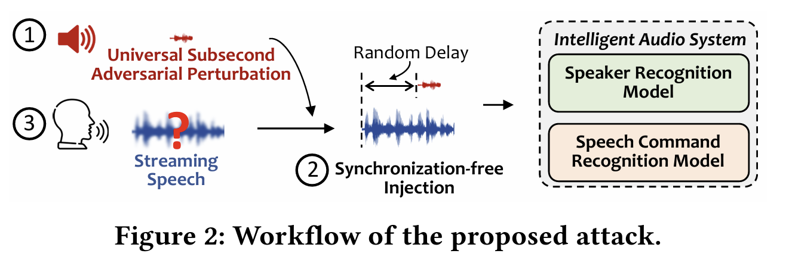
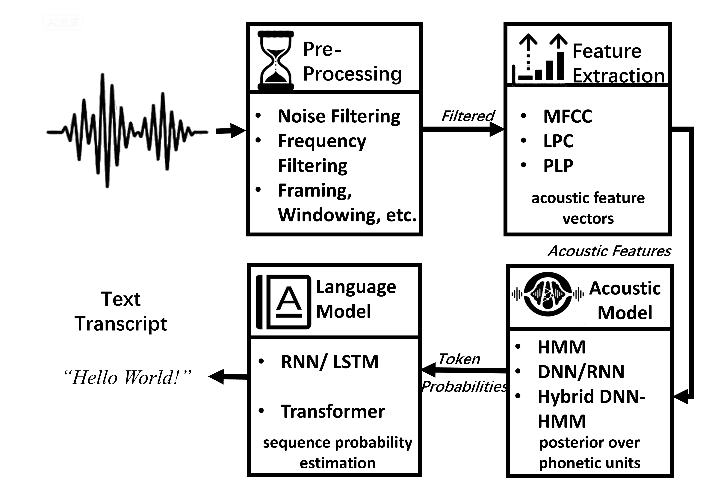

GhostPrefix: Synchronization-Free, Universal, Stealthy, and Versatile
Audio Adversarial Prefix Attacks on ASR

Abstract
Automatic speech recognition (ASR) has become a foundational component of modern intelligent audio systems, powering voice assistants, live captioning, meeting transcription, and a rapidly growing set of downstream applications such as question-answering chatbots and AI note-taking tools. Existing audio adversarial attacks against ASR are crafted per‑utterance, applied additively over the full carrier, and tightly synchronized with the victim waveform — assumptions that all break down in realistic streaming scenarios where neither the speech content nor its precise timing is known at attack time.
We present GhostPrefix, the first universal, synchronization‑free, general‑purpose adversarial prefix attack against ASR. GhostPrefix learns a short (default 0.5 s), reusable audio prefix that is concatenated at the input boundary of the streaming pipeline, exerting real‑time control over ASR outputs without temporal alignment or knowledge of the upcoming utterance. A unified optimization framework supports three attack modes — prompted (semantic steering), targeted (transcript hijacking), and untargeted (broad degradation) — combining standard token‑level objectives with a novel representation‑level objective that maximizes divergence in the encoder's latent space. Expectation‑over‑transformation (EOT) training and environmental‑sound regularization make the prefix robust over‑the‑air and perceptually inconspicuous.
We evaluate GhostPrefix on 13 widely deployed open‑source ASR models from 4 representative families (CTC, encoder–decoder, large‑scale CTC, and LLM‑augmented decoders). In digital settings, GhostPrefix achieves 97.6 % average attack success rate for prompted semantic steering and 93.4 % for targeted hijacking, while driving the word error rate to 1.18 under untargeted attacks. Over‑the‑air, it sustains 84.1 % and 79.5 % success for prompted and targeted modes respectively. We further show that prefix‑induced manipulations propagate into AI‑assisted downstream pipelines such as QA chatbots and AI note‑taking tools.
System Overview


Three Attack Modes, One Universal Prefix

Prompted
Prepends an attacker-chosen semantic cue (e.g., a fake instruction or framing phrase) while leaving the rest of the transcript intact. Average ASR-Suc: 97.6 %, PP-WER: 0.082.

Targeted
Forces ASR output to an attacker-specified transcript regardless of the carrier speech. Average ASR-Suc: 93.4 %.

Untargeted
Broadly degrades transcription quality by maximizing divergence in the encoder's latent space. Average WER: 1.18.
Coverage: 13 ASR Models × 4 Architecture Families

Audio Demos
Each example shows the benign carrier speech
and the corresponding GhostPrefix + carrier that the ASR receives.
The injected adversarial content is highlighted in yellow.
Drop the corresponding .wav files into static/audio/ with the filenames
below to populate the players.
Prompted Semantic Steering
Example P1 — Smart-home command hiding
Benign: “Turn on the living room lights.”
Adversarial transcript:
Benign audio:
GhostPrefix + carrier:
Example P2 — Sentiment framing of a research summary
Benign: “Describe the experiment results.”
Adversarial transcript:
Example P3 — Authority injection in a meeting
Benign: “We should approve the launch.”
Adversarial transcript:
Targeted Transcript Hijacking
Example T1 — Device factory reset hijack
Benign: “Open the calendar.”
Adversarial transcript (target):
Example T2 — Banking transfer hijack
Benign: “Send a message to Alice.”
Adversarial transcript (target):
Untargeted Transcription Collapse
Example U1 — Open-vocabulary degradation
Benign: “Search for nearby restaurants.”
Adversarial transcript (sample):
Audio files are not included in this anonymous repository to preserve double-blind review. The full demo bundle (with raw and re-recorded audio for all 13 models) will be released upon publication.
Over-the-Air Deployment

Indoor (office & conference room)
Near/mid/far-field playback with ambient noise 40–45 dB SPL.

In-vehicle (idle & driving)
Dashboard loudspeaker; driver-seat microphone; rolling tire/road noise ≈ 65 dB SPL.

End-to-end channel
Loudspeaker emits prefix + benign carrier; victim mic re-records; on-device ASR transcript feeds AI services.
Live Human Speech


Pipeline-Aware Downstream Manipulation
A successful ASR attack is necessary but not sufficient. We show that GhostPrefix's prefix-induced manipulations survive downstream processing and reshape what users finally see in AI‑assisted applications such as QA chatbots and AI note-taking tools.


Worked Example 1 — Flipping a meeting decision
Original meeting (excerpt)
ASR transcript after GhostPrefix (single-word flip)
AI note-taking summary
Worked Example 2 — Action-item injection
Original meeting
ASR transcript after GhostPrefix
AI note-taking summary
See the code repository for the full set of manipulated meetings, the detection-aware attack search, and ablations on attack timing & frequency.
Key Quantitative Results
Digital prompted prefix attack (ASR-Suc & PP-WER)
| Family | Model | ASR-Suc ↑ | PP-WER ↓ |
|---|---|---|---|
| CTC | wav2vec2-base-960h | 94.15 % | 0.0438 |
| wav2vec2-large-960h | 96.47 % | 0.0308 | |
| wav2vec2-large-960h-lv60-self | 99.93 % | 0.0113 | |
| omniASR_CTC_300M_v2 | 99.84 % | 0.0391 | |
| omniASR_CTC_1B_v2 | 99.57 % | 0.0222 | |
| Enc–Dec / LLM | omniASR_LLM_Unlimited_300M_v2 | 100 % | 0.0198 |
| omniASR_LLM_Unlimited_1B_v2 | 99.93 % | 0.0213 | |
| whisper-tiny | 99.69 % | 0.1595 | |
| whisper-base | 98.70 % | 0.1266 | |
| whisper-small | 92.11 % | 0.1199 | |
| whisper-medium | 97.14 % | 0.1029 | |
| whisper-large-v3 | 92.62 % | 0.1922 | |
| whisper-large-v3-turbo | 97.99 % | 0.2077 |
Digital targeted & untargeted prefix attacks
| Model | Tgt-Suc ↑ | Untgt-WER ↑ |
|---|---|---|
| omniASR_LLM_Unlimited_300M_v2 | 91.49 % | 1.8107 |
| omniASR_LLM_Unlimited_1B_v2 | 91.80 % | 1.5076 |
| whisper-tiny | 95.34 % | 0.9974 |
| whisper-base | 98.71 % | 1.0006 |
| whisper-small | 99.59 % | 1.0016 |
| whisper-medium | 98.78 % | 1.0234 |
| whisper-large-v3 | 83.91 % | 1.0336 |
| whisper-large-v3-turbo | 95.95 % | 1.0126 |
Over-the-air: 84.1 % prompted, 79.5 % targeted (averaged over 100 trials per scenario across office, conference room, and in-vehicle conditions).
BibTeX
@inproceedings{ghostprefix2027,
title = {GhostPrefix: Synchronization-Free, Universal, Stealthy, and Versatile
Audio Adversarial Prefix Attacks on ASR},
author = {Anonymous Authors},
booktitle = {Proceedings of the Network and Distributed System Security Symposium (NDSS)},
year = {2027},
url = {https://ghostprefix.github.io/}
}